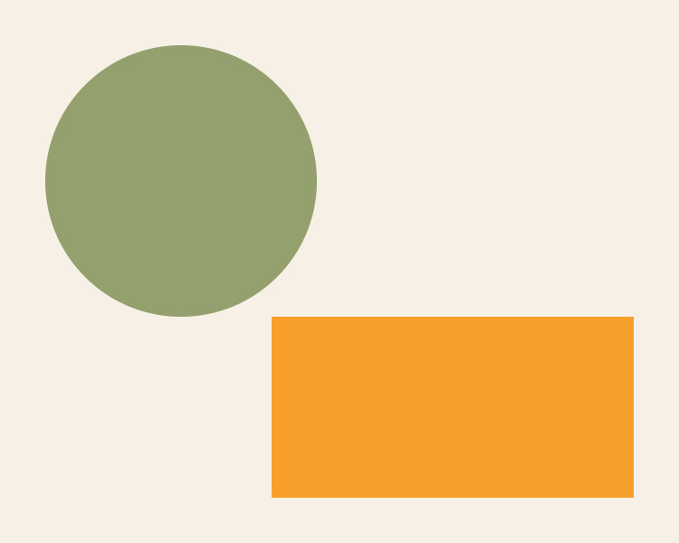

<!DOCTYPE htm>
<htm lang="ru">

<head>
    <meta charset="UTF-8">
    <title>Задание 4. Карты изображений</title>
</head>

<body bgcolor="F7F0E6" text="1E1E1E">

    <h3 align="center">Примеры карт</h3>
    <hr>

    <p align="center"><b>Карта 1</b></p>
    <p align="center"><i>Нажмите на зелёный круг, чтобы перейти на страницу "Семья лисичек".</i></p>
    <p align="center"><i>Нажмите на жёлтый прямоугольник, чтобы перейти на страницу "Лисички в лесу".</i></p>

    <center>  
    
    <p align="center"><b>Карта 2</b></p>
    <p align="center"><i>Нажмите на красный прямоугольник, чтобы вернуться в начало.</i></p>
    <br>
    

    <map name="karta1">
        <area shape="circle"
              coords="200,200,150"
              href="index2.html"
              alt="Круг">

        <area shape="rect"
              coords="300,350,700,550"
              href="index1.html"
              alt="Прямоугольник">
    </map>

    <map name="karta2">
        <area shape="rect"
              coords="0,0,650,325"
              href="index4.htm"
              alt="Прямоугольник">
    </map>
    </center>
</body>

</htm>